28-HTTPS
网络安全背景
网络就是实现不同主机之间的通讯。网络出现之初利用TCP/IP协议簇的相关协议概念，已经满足了互连两台主机之间可以进行通讯的目的，虽然看似简简单单几句话，就描述了网络概念与网络出现的目的，但是为了真正实现两台主机之间的稳定可靠通讯，其实是一件非常困难的事情了，如果还要再通讯的基础上保证数据传输的安全性，可想而知，绝对是难上加难，因此，网络发明之初，并没有太关注TCP/IP互联协议中的安全问题。
对于默认的两台主机而言，早期传输数据信息并没有通过加密方式传输数据，设备两端传输的数据本身实际是明文的，只要能截取到传输的数据包，就可以直接看到传输的数据信息，所以根本没有安全性可言。
早期利用明文方式传输的协议有：FTP、HTTP、SMTP、Telnet等。
后来就出现了加密的通讯方式，实际应用如 ssh、https
网络安全涉及问题
通过上文的介绍，其实已经了解到早期网络设备间进行通讯时，是采用明文进行数据传输的，并没有网络安全技术可言。
我们可以提出一种假设，如果在网络上的两台主机之间传输数据，就是采用明文的方式；并且对于网络传输而言，并没有相关的网络安全技术保驾护航，这样在互联网上进行数据传输，都有哪些网络风险需要进行面对。
数据机密性
在网络传输数据信息时，对数据的加密是至关重要的，否则所有传输的数据都是可以随时被第三方看到，完全没有机密性可言。
数据机密性示意图
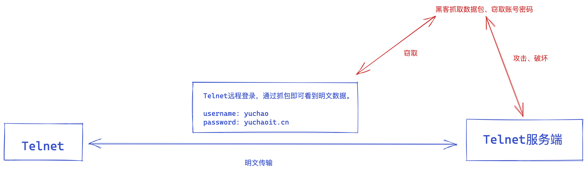
数据完整性
网络传输数据的完整性，也是安全领域中需要考虑的重要环节，如果不能保证传输数据的完整性，那传输过程中的数据就有可能被任何人所篡改，而传输数据双方又不能及早的进行发现。
将会造成互连通讯双方所表达信息的意义完全不一致。因此，对于不完整的数据信息，接收方应该进行相应判断，如果完整性验证错误，就拒绝接收相应的数据。
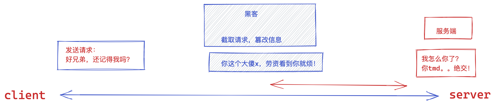
身份验证问题
网络中传输数据时，很有可能传输的双方是第一次建立连接，进行相互通讯，既然是第一次见面沟通，如何确认对方的身份信息，的确是我要进行通讯的对象呢？
如果不是正确的通讯对象，在经过通讯后，岂不是将所有数据信息发送给了一个陌生人。
这也是ssh要做的指纹确认的原因。
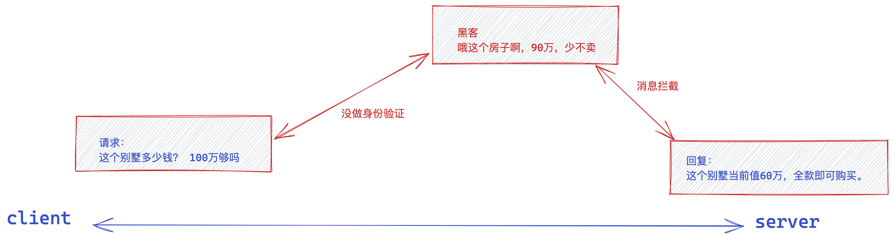
解决如上问题
网络安全涉及很多方面，而网络数据的安全传输通常会面临以下几方面的威胁：
- 数据窃听与机密性： 即怎样保证数据不会因为被截获或窃听而暴露。
- 数据篡改与完整性： 即怎样保证数据不会被恶意篡改。
- 身份冒充与身份验证： 即怎样保证数据交互双方的身份没有被冒充。
针对以上几个问题，可以用以下几种数据加密方式来解决（每种数据加密方式又有多种不同的算法实现）：
| 数据加密方式 | 描述 | 主要解决的问题 | 常用算法 |
|---|---|---|---|
| 对称加密 | 指数据加密和解密使用相同的密钥 | 数据的机密性 | DES, AES |
| 非对称加密 | 也叫公钥加密，指数据加密和解密使用不同的密钥--密钥对儿 | 身份验证 | DSA，RSA |
| 单向加密 | 指只能加密数据，而不能解密数据 | 数据的完整性 | MD5，SHA系列算法 |
对称加密
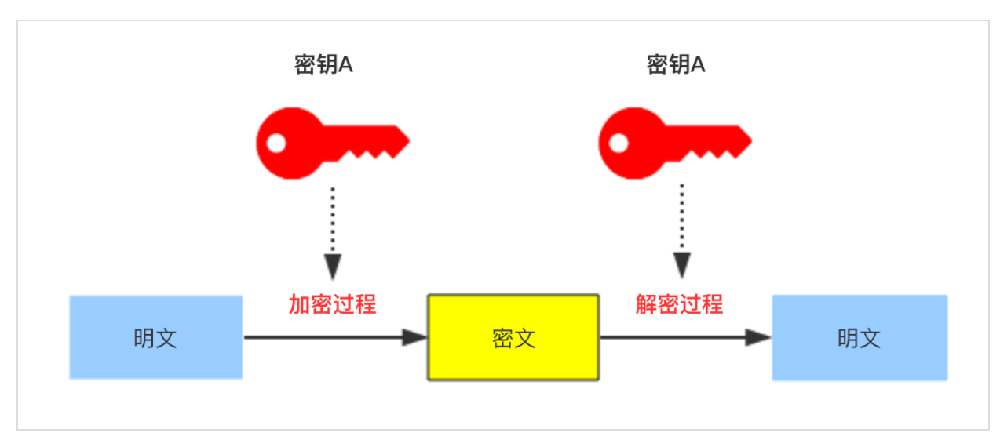
对称加密算法，如其名，就是使用同一个秘钥进行加密和解密。
优点是速度较快，适合对数据量比较大的数据进行加密。
缺点是密钥的保存方式需要保证，一旦加密或者解密的哪一方泄漏了密钥，都会导致信息的泄漏。
常用的对称加密算法有:DES、3DES、DESX、Blowfish、IDEA、RC4、RC5、RC6、AES。
非对称加密
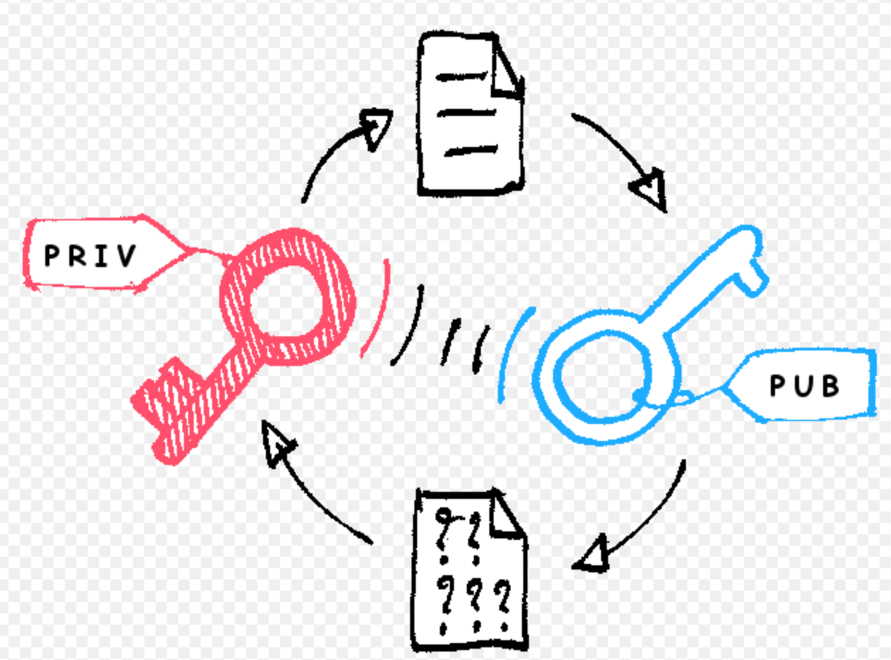
非对称加密，加密，解密，必须使用一个公开的公钥（public key）一个必须保护好的私钥（private key）。
公钥、私钥、成对出现，通过公钥加密的数据，只能用该私钥解密。
HTTPS协议
HTTPS协议不是单独的协议，而是基于HTTP+SSL或者HTTP+TLS的组合协议。
SSL 的全名是 Secure Sockets Layer 安全套接字层
TSL (Transport Layer Security） 安全传输层协议
作用
不使用SSL/TLS的HTTP通信，就是不加密的通信。所有信息明文传播，带来了三大风险。
（1） 窃听风险（eavesdropping）：第三方可以获知通信内容。
（2） 篡改风险（tampering）：第三方可以修改通信内容。
（3） 冒充风险（pretending）：第三方可以冒充他人身份参与通信。
SSL/TLS协议是为了解决这三大风险而设计的，希望达到：
（1） 所有信息都是加密传播，第三方无法窃听。
（2） 具有校验机制，一旦被篡改，通信双方会立刻发现。
（3） 配备身份证书，防止身份被冒充。
互联网是开放环境，通信双方都是未知身份，这为协议的设计带来了很大的难度。
而且，协议还必须能够经受所有匪夷所思的攻击，这使得SSL/TLS协议变得异常复杂。
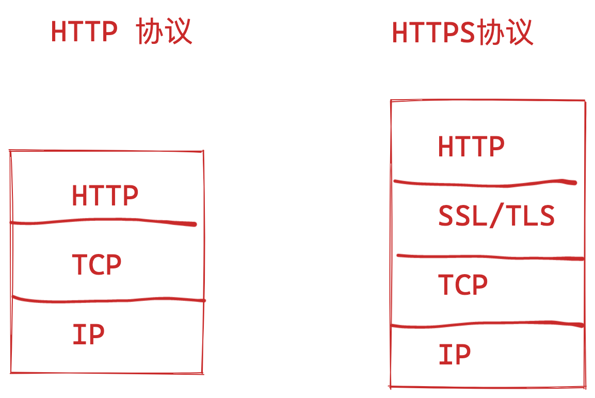
为什么需要HTTPS
不用HTTPS、纯HTTP的网站，就会面临数据包被恶意劫持、篡改；
改用HTTPS数据包在传输过程中被加密，黑客无法窃取，篡改，冒充；
HTTPS解析流程
1. 服务端有一对儿数字证书，包含私钥、公钥，也被称为CA证书，这个证书由专门的证书服务商提供，受互联网信任。（也可以自己创建CA证书，但是没人认。。）
2. 客户端发起https://请求，默认端口443
3. 服务端接收到请求后自动将自己的CA证书发给客户端
4. 客户端收到CA证书后，浏览器自动判断，是否在有效期内，是否受互联网信任，信任就是小绿锁，否则就是红色大叉。
5. 客户端如果验证证书通过、此时会【生成一个随机数】通过公钥对随机数加密
6. 客户端将这个【公钥加密后的随机数】发给服务端
7. 服务端接到这个【公钥加密后的随机数】后，使用自己的随机数解密，确认建立连接，后续的所有数据交互，通过这个随机数实现数据【对称加密】。
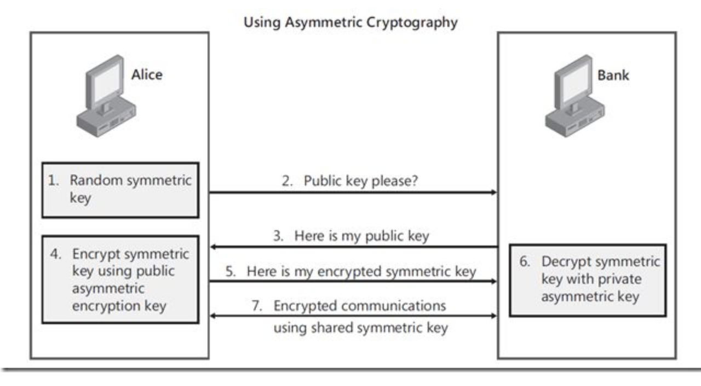
图解
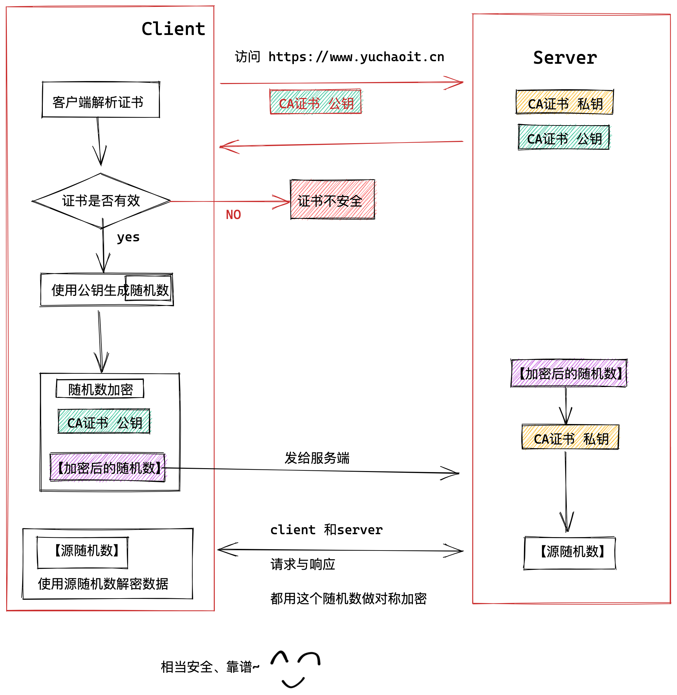
HTTPS证书实践
购买平台
各大云厂商
阿里云 https://yundun.console.aliyun.com/
腾讯云 https://buy.cloud.tencent.com/ssl
查看其他公司怎么用证书
证书详细
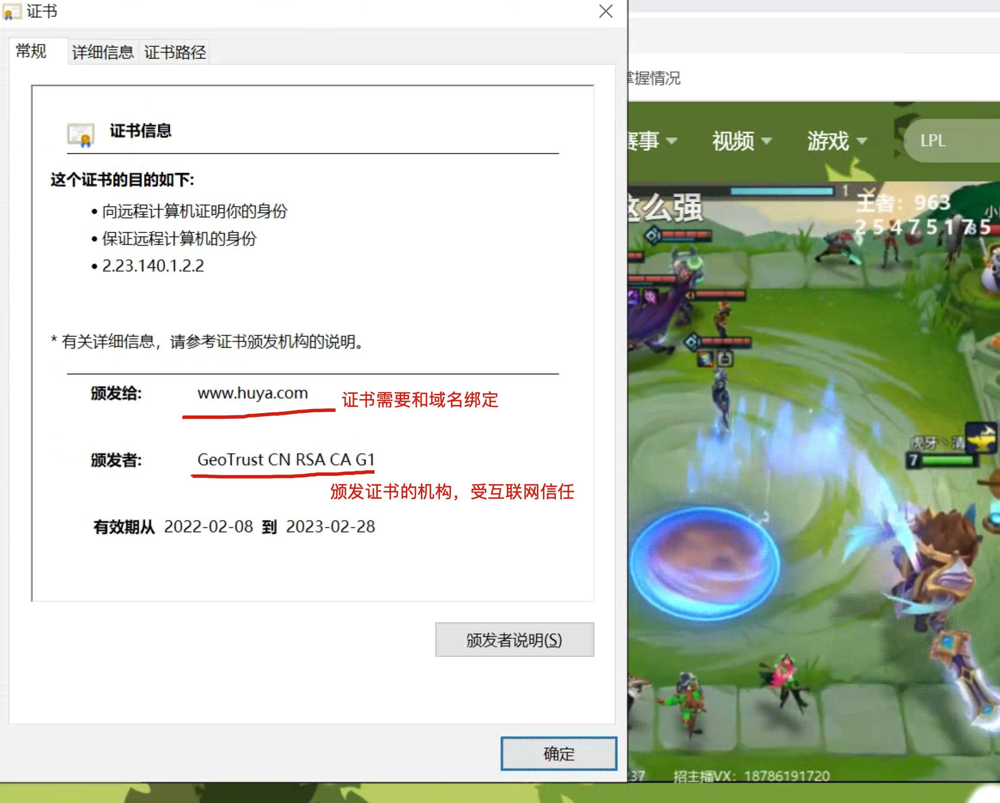
颁发证书的机构
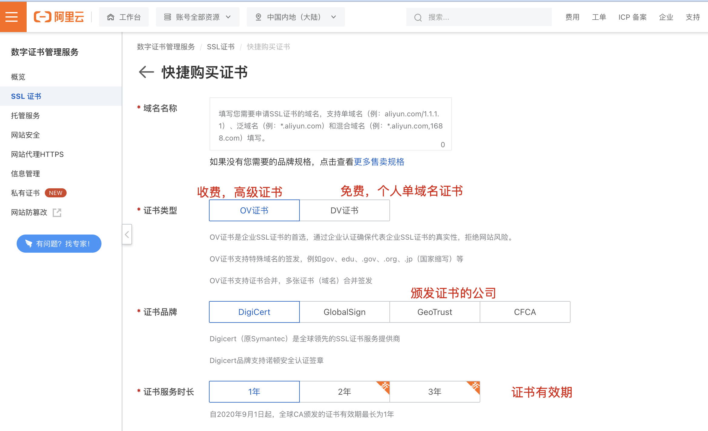
证书类型与区别
DV类型证书：中文全称是域名验证型证书，证书审核方式为通过验证域名所有权即可签发证书。此类型证书适合个人和小微企业申请，价格较低，申请快捷，但是证书中无法显示企业信息，安全性较差。在浏览器中显示锁型标志。
OV类型证书：中文全称是企业验证型证书，证书审核方式为通过验证域名所有权和申请企业的真实身份信息才能签发证书。目前OV类型证书是全球运用最广，兼容性最好的证书类型。此证书类型适合中型企业和互联网业务申请。在浏览器中显示锁型标志，并能通过点击查看到企业相关信息。支持ECC高安全强度加密算法，加密数据更加安全，加密性能更高。
EV类型证书：中文全称是增强验证型证书，证书审核级别为所有类型最严格验证方式，在OV类型的验证基础上额外验证其他企业的相关信息，比如银行开户许可证书。EV类型证书多使用于银行,金融,证券,支付等高安全标准行业。其在地址栏可以显示独特的EV绿色标识地址栏，最大程度的标识出网站的可信级别。支持ECC高安全强度加密算法，加密数据更加安全，加密性能更高。
- DV、免费、个人证书
- OV、企业级证书
- EV、银行等高安全证书
腾讯、OV证书
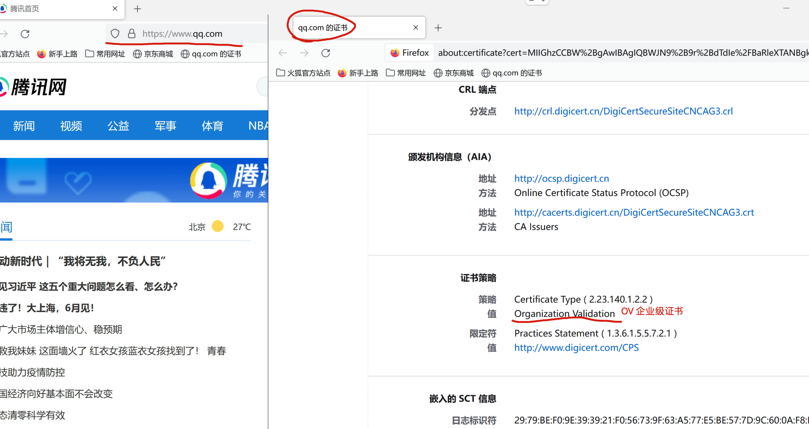
OV SSL是 Organization Validation SSL 的缩写，指需要验证网站所有单位的真实身份的标准型SSL证书，此类证书也就是正常的SSL证书，不仅能起到网站机密信息加密的作用，而且能向用户证明网站的真实身份。所以，推荐在所有电子商务网站使用，因为电子商务需要的是在线信任和在线安全。
博客园DV证书
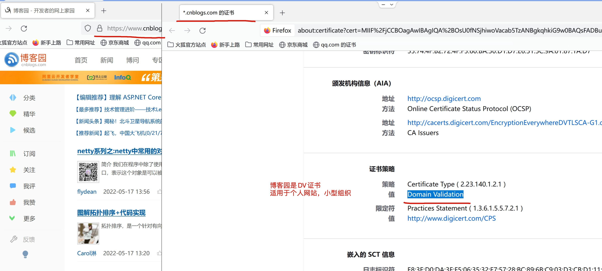
汇丰银行EV证书
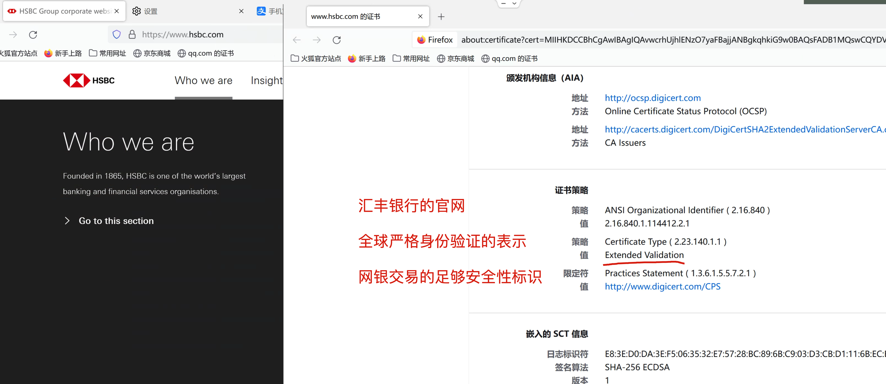
域名匹配类型
单域名证书 www.yuchaoit.cn
多域名证书 www.yuchaoit.cn blog.yuchaoit.cn
通配符域名 *.yuchaoit.cn
DV证书购买注意事项
1. 一个通配符证书只支持二级域名
2. DV证书最多买3年，不支持续费，只能买新的
3. DV证书到期后浏览器告警不安全
4. 微信小程序、苹果商店等已经全面要求必须https
5.证书提前买，别突然到期了网站挂了，
实践购买阿里云证书（免费）
付费的证书，支持多域名匹配
免费的证书，只用于测试https，匹配单个域名
创建免费证书
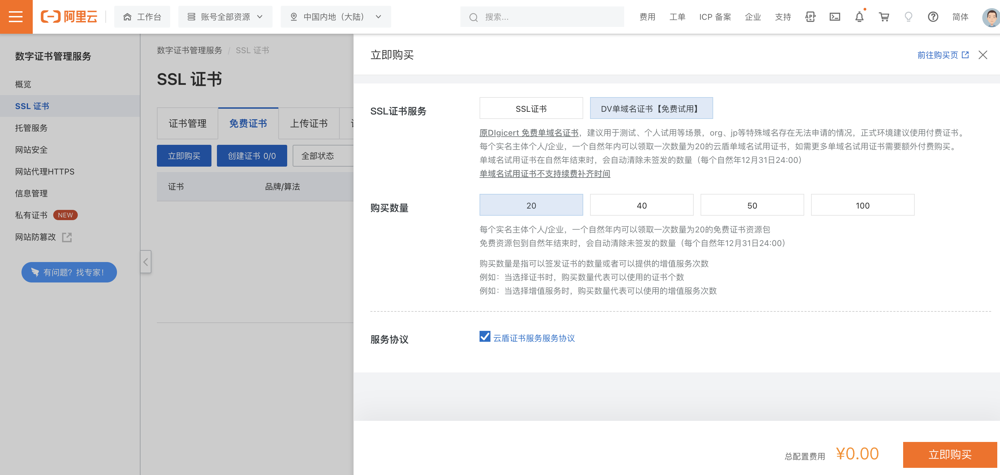
申请证书
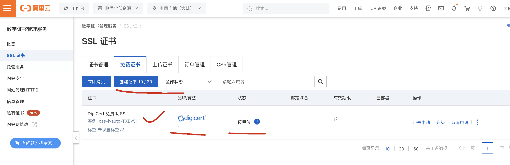
绑定域名
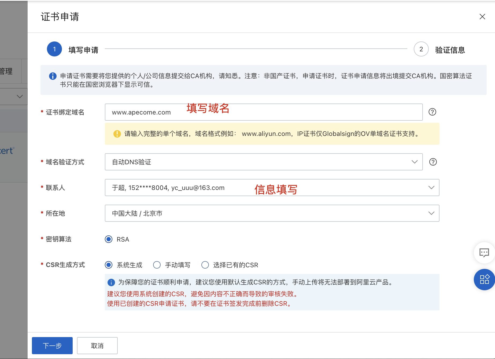
填写DNS验证
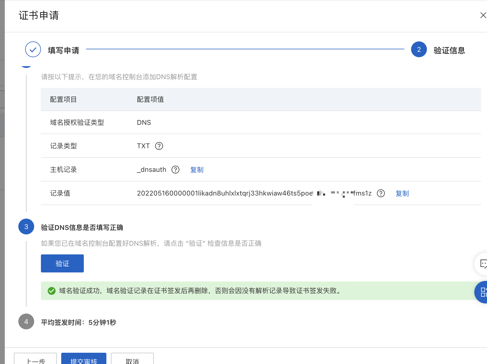
提交审核
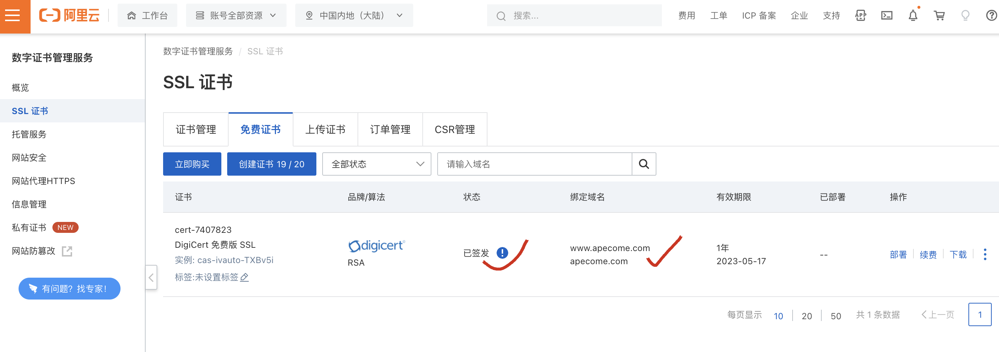
下载证书（结合nginx部署）
接下来就是下载证书，交给nginx
用户访问网站时（nginx）会发送证书给客户端。
通过openssl命令检测证书过期时间
运维经常会遇见的生产故障就是，证书到期，导致访问故障，因此需要做好证书过期时间监控。
目前标准的证书存储格式是x509，还有其他的证书格式，需要包含的内容为：
公钥信息，以及证书过期时间
证书的合法拥有人信息
证书该如何被使用
CA颁发机构信息
CA签名的校验码
互联网上使用的SSL和TLS证书管理机制均使用x509的格式
脚本监控证书过期时间
server_name=www.apecome.com
# 获取网站的证书有效期
ssl_time=$(echo | openssl s_client -servername ${server_name} -connect ${server_name}:443 2>/dev/null | openssl x509 -noout -dates|awk -F '=' '/notAfter/{print $2}')
# 转换时间戳
ssl_unix_time=$(date +%s -d "${ssl_time}")
# 获取今天时间戳
today=$(date +%s)
# 计算剩余时间
let expr_time=($ssl_unix_time-$today)/24/3600
echo "${server_name} 该ssl证书剩余时间：$expr_time"
一、nginx实战配置https
1.获取证书（阿里云申请、自建）
1.可以去阿里云申请免费单域名证书，下载使用
部署文档
https://help.aliyun.com/document_detail/98728.html?spm=5176.b657008.help.dexternal.7b14799daFqyjG
2.自己创建私有证书，内网环境下使用。
2.自建证书
openssl由三部分组成：
- libcrpto：通用加密库
- libssl：TSL/SSL组成库，基于会话实现了身份认证，数据加密和会话完整性。
- openssl：提供命令行工具，例如模拟创建证书，查看证书信息
注意先安装openssl
[root@web-7 /etc/nginx/ssl_key]#yum install openssl openssl-devel -y
创建证书目录
[root@web-7 ~]#mkdir /etc/nginx/ssl_key
[root@web-7 ~]#cd /etc/nginx/ssl_key/
至少输入4位密码，创建私钥文件
[root@web-7 /etc/nginx/ssl_key]#openssl genrsa -idea -out server.key 2048
# 创建证书文件，x509类型证书，期限是100半年
[root@web-7 /etc/nginx/ssl_key]#openssl req -days 36500 -x509 -sha256 -nodes -newkey rsa:2048 -keyout server.key -out server.crt
Generating a 2048 bit RSA private key
.................+++
....................+++
writing new private key to 'server.key'
-----
You are about to be asked to enter information that will be incorporated
into your certificate request.
What you are about to enter is what is called a Distinguished Name or a DN.
There are quite a few fields but you can leave some blank
For some fields there will be a default value,
If you enter '.', the field will be left blank.
-----
Country Name (2 letter code) [XX]:CN
State or Province Name (full name) []:BJ
Locality Name (eg, city) [Default City]:BJ
Organization Name (eg, company) [Default Company Ltd]:yuchaoit.cn
Organizational Unit Name (eg, section) []:yuchaoit.cn
Common Name (eg, your name or your server's hostname) []:yuchaoit.cn
Email Address []:yc_uuu@163.com
分别填入证书的信息
国家
省份
城市
组织
部门
主机名
邮箱
检查私钥和证书
[root@web-7 /etc/nginx/ssl_key]#ls
server.crt server.key
3.设置nginx
nginx.conf主配置文件
user nginx;
worker_processes auto;
error_log /var/log/nginx/error.log notice;
pid /var/run/nginx.pid;
events {
worker_connections 1024;
}
http {
include /etc/nginx/mime.types;
default_type application/octet-stream;
log_format main '$remote_addr - $remote_user [$time_local] "$request" '
'$status $body_bytes_sent "$http_referer" '
'"$http_user_agent" "$http_x_forwarded_for"';
access_log /var/log/nginx/access.log main;
sendfile on;
#tcp_nopush on;
keepalive_timeout 65;
#gzip on;
include /etc/nginx/conf.d/*.conf;
}
~
ssl.conf
自动跳转https设置
server {
listen 80;
server_name www.yuchaoit.cn;
rewrite ^(.*) https://$server_name$1 redirect;
}
server{
listen 443 ssl;
server_name www.yuchaoit.cn;
ssl_certificate ssl_key/server.crt;
ssl_certificate_key ssl_key/server.key;
location / {
root /www;
index index.html;
}
}
4.启动nginx（https）
# 创建测试数据
mkdir -p /www
cat >/www/index.html <<EOF
<meta charset=utf8>
超哥带你学nginx https ，我是web-7机器
EOF
systemctl restart nginx
5.访问nginx
本地做好域名解析
10.0.0.7 www.yuchaoit.cn
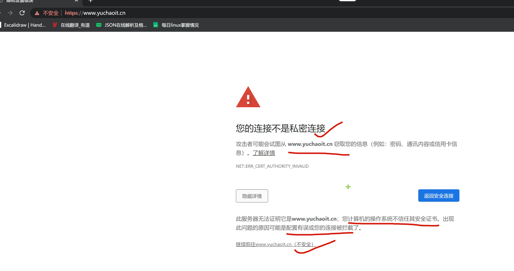
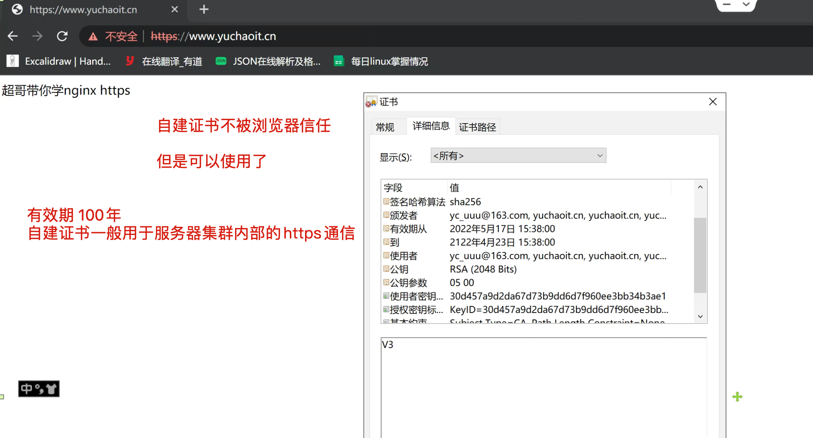
二、nginx集群配置https（web-7，web-8）
情况1，全站https通信
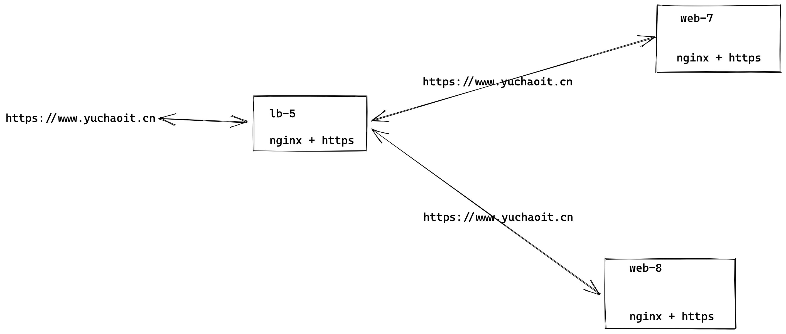
1.部署web-8
# 证书发送
[root@web-7 /etc/nginx/conf.d]#cd /etc/nginx/
[root@web-7 /etc/nginx]#ls
conf.d fastcgi_params mime.types modules nginx.conf scgi_params ssl_key uwsgi_params
[root@web-7 /etc/nginx]#
[root@web-7 /etc/nginx]#scp -r ssl_key 10.0.0.8:/etc/nginx/
# 配置文件发送
[root@web-7 /etc/nginx]#scp -r conf.d/ssl.conf 10.0.0.8:/etc/nginx/conf.d/
# 网页文件创建
mkdir -p /www
cat >/www/index.html <<EOF
<meta charset=utf8>
超哥带你学nginx https ，我是web-8机器
EOF
systemctl restart nginx
2.部署lb机器
# 获取统一的证书
scp -r ssl_key 10.0.0.5:/etc/nginx/
# 创建反向代理配置文件
upstream ssl_pools {
server 172.16.1.7:443;
server 172.16.1.8:443;
}
# 80虚拟主机，目的是为了匹配http请求的80端口，强制转发给https的443端口
server {
listen 80;
server_name www.yuchaoit.cn;
rewrite ^(.*) https://$server_name$1 redirect;
}
server {
# 注意端口号，协议；
listen 443 ssl;
server_name www.yuchaoit.cn;
ssl_certificate ssl_key/server.crt;
ssl_certificate_key ssl_key/server.key;
# 反向代理
location / {
proxy_pass https://ssl_pools;
include proxy_params;
}
}
# 反向代理参数文件
# cat proxy_params
proxy_set_header Host $http_host;
proxy_set_header X-Forwarded-For $proxy_add_x_forwarded_for;
proxy_connect_timeout 30;
proxy_send_timeout 60;
proxy_read_timeout 60;
proxy_buffering on;
proxy_buffer_size 32k;
proxy_buffers 4 128k;
# 检测语法，重启
[root@lb-5 /etc/nginx]#nginx -t
nginx: the configuration file /etc/nginx/nginx.conf syntax is ok
nginx: configuration file /etc/nginx/nginx.conf test is successful
[root@lb-5 /etc/nginx]#systemctl restart nginx
3.测试https集群访问
客户端做好dns解析
10.0.0.5 www.yuchaoit.cn
先手动测试web服务器是否可以访问
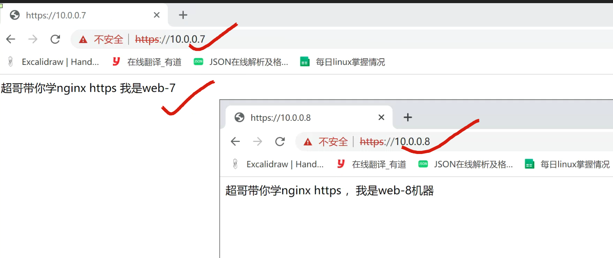
测试负载均衡的转发
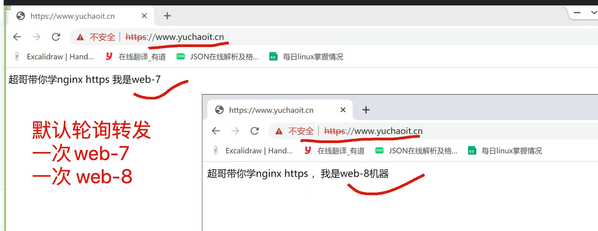
情况二：lb负责https外网加密，后端web内网简化无须证书
1.部署lb机器
注意要修改后端节点的端口、以及转发的http协议。
[root@lb-5 /etc/nginx/conf.d]#vim ssl.conf
[root@lb-5 /etc/nginx/conf.d]#cat ssl.conf
upstream ssl_pools {
server 172.16.1.7;
server 172.16.1.8;
}
# 80虚拟主机，目的是为了匹配http请求的80端口，强制转发给https的443端口
server {
listen 80;
server_name www.yuchaoit.cn;
rewrite ^(.*) https://$server_name$1 redirect;
}
server {
listen 443 ssl;
server_name www.yuchaoit.cn;
ssl_certificate ssl_key/server.crt;
ssl_certificate_key ssl_key/server.key;
# 反向代理
location / {
proxy_pass http://ssl_pools;
include proxy_params;
}
}
2.部署web机器组7,8
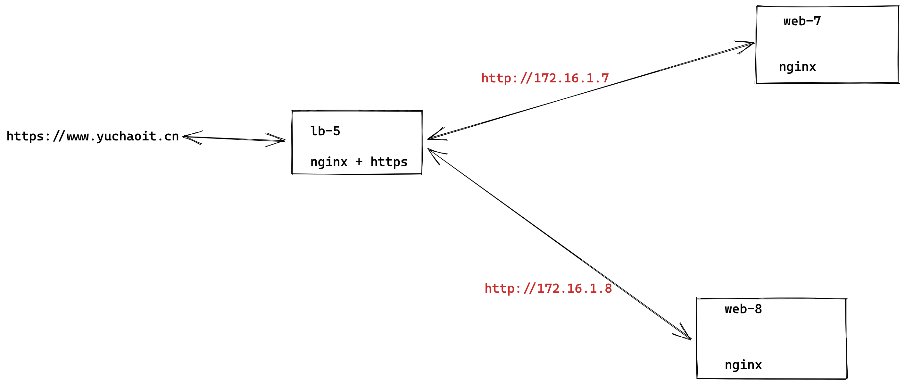
web-7
[root@web-7 /etc/nginx]#cat conf.d/ssl.conf
server {
listen 80;
server_name www.yuchaoit.cn;
location / {
root /www;
index index.html;
}
}
# 重启
systemctl restart nginx
web-8
[root@web-8 /etc/nginx/conf.d]#cat ssl.conf
server {
listen 80;
server_name www.yuchaoit.cn;
location / {
root /www;
index index.html;
}
}
# 重启
systemctl restart nginx
3.测试访问
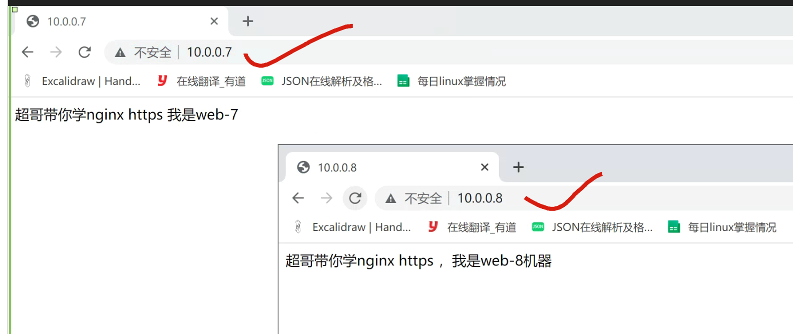
4.测试负载均衡
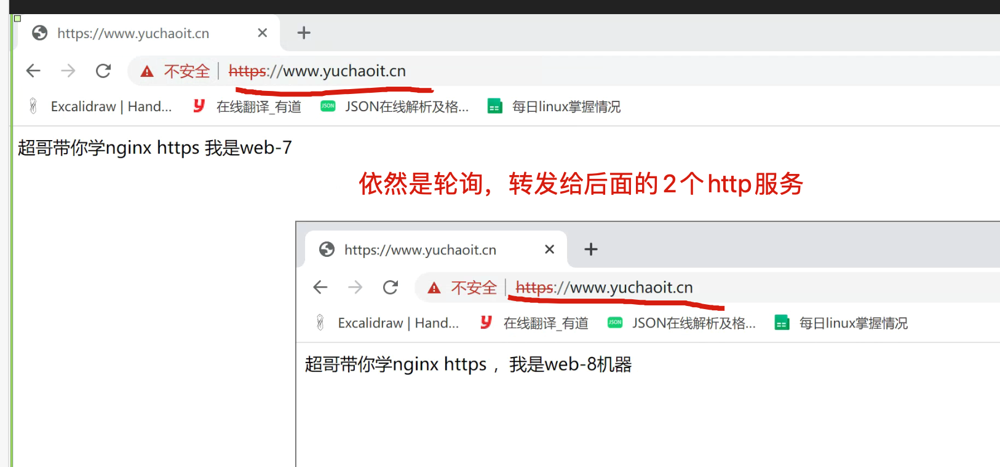
三、wordpress支持https
需要开启fastcgi转发参数，支持https
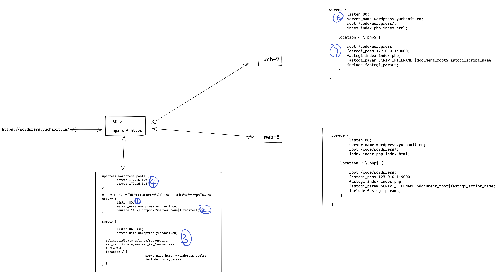
1.lb服务器设置
[root@lb-5 /etc/nginx/conf.d]#cat wordpress.conf
upstream wordpress_pools {
server 172.16.1.7;
server 172.16.1.8;
}
# 80虚拟主机，目的是为了匹配http请求的80端口，强制转发给https的443端口
server {
listen 80;
server_name wordpress.yuchaoit.cn;
rewrite ^(.*) https://$server_name$1 redirect;
}
server {
listen 443 ssl;
server_name wordpress.yuchaoit.cn;
ssl_certificate ssl_key/server.crt;
ssl_certificate_key ssl_key/server.key;
# 反向代理
location / {
proxy_pass http://wordpress_pools;
include proxy_params;
}
}
2.web机器组
两台web机器都要设置代理参数，让nginx+php的代理参数，支持https。
fastcgi_params参数(两台机器)
[root@web-8 /etc/nginx]#
[root@web-8 /etc/nginx]#cat fastcgi_params
fastcgi_param QUERY_STRING $query_string;
fastcgi_param REQUEST_METHOD $request_method;
fastcgi_param CONTENT_TYPE $content_type;
fastcgi_param CONTENT_LENGTH $content_length;
fastcgi_param SCRIPT_NAME $fastcgi_script_name;
fastcgi_param REQUEST_URI $request_uri;
fastcgi_param DOCUMENT_URI $document_uri;
fastcgi_param DOCUMENT_ROOT $document_root;
fastcgi_param SERVER_PROTOCOL $server_protocol;
fastcgi_param REQUEST_SCHEME $scheme;
fastcgi_param HTTPS $https if_not_empty;
fastcgi_param GATEWAY_INTERFACE CGI/1.1;
fastcgi_param SERVER_SOFTWARE nginx/$nginx_version;
fastcgi_param REMOTE_ADDR $remote_addr;
fastcgi_param REMOTE_PORT $remote_port;
fastcgi_param SERVER_ADDR $server_addr;
fastcgi_param SERVER_PORT $server_port;
fastcgi_param SERVER_NAME $server_name;
# PHP only, required if PHP was built with --enable-force-cgi-redirect
fastcgi_param REDIRECT_STATUS 200;
# enable https
fastcgi_param HTTPS on;
nginx配置文件设置(wordpress，两台机器)
[root@web-8 /etc/nginx/conf.d]#ls
ssl.conf.bak wordpress.conf
[root@web-8 /etc/nginx/conf.d]#
[root@web-8 /etc/nginx/conf.d]#cat wordpress.conf
server {
listen 80;
server_name wordpress.yuchaoit.cn;
root /code/wordpress/;
index index.php index.html;
location ~ \.php$ {
root /code/wordpress;
fastcgi_pass 127.0.0.1:9000;
fastcgi_index index.php;
fastcgi_param SCRIPT_FILENAME $document_root$fastcgi_script_name;
include fastcgi_params;
}
}
重启
[root@web-8 /etc/nginx/conf.d]#nginx -t
nginx: the configuration file /etc/nginx/nginx.conf syntax is ok
nginx: configuration file /etc/nginx/nginx.conf test is successful
[root@web-8 /etc/nginx/conf.d]#systemctl restart nginx
启动php后端
systemctl restart php-fpm
3.测试访问lb入口
dns解析
10.0.0.5 www.yuchaoit.cn wordpress.yuchaoit.cn
4.访问结果
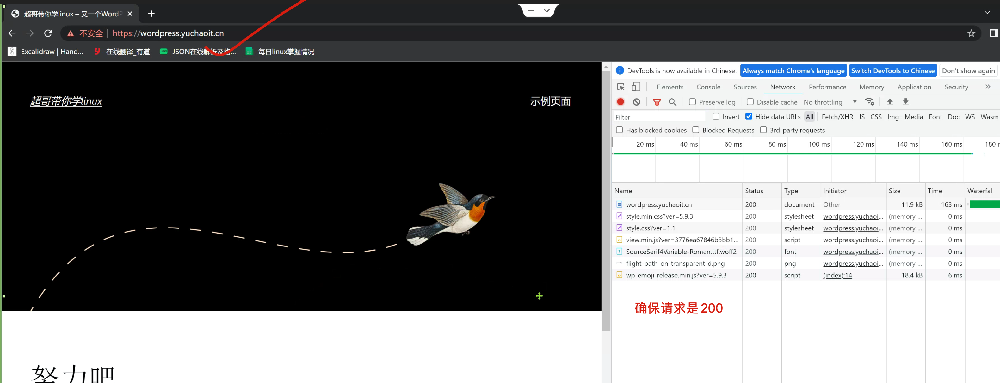
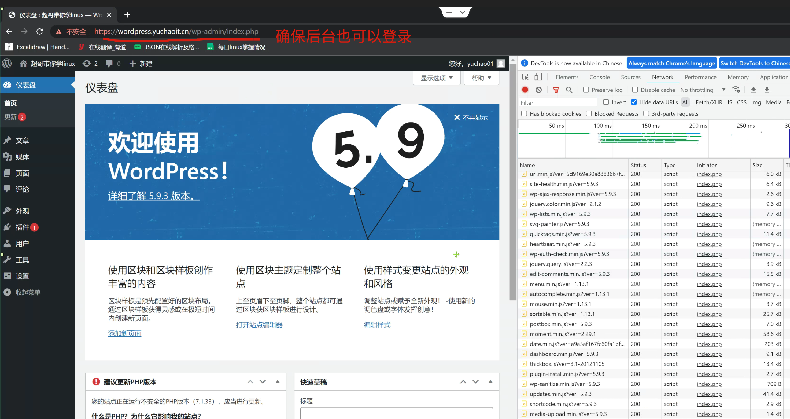
5. 日志检测（两个web机器）
web-7、web-8
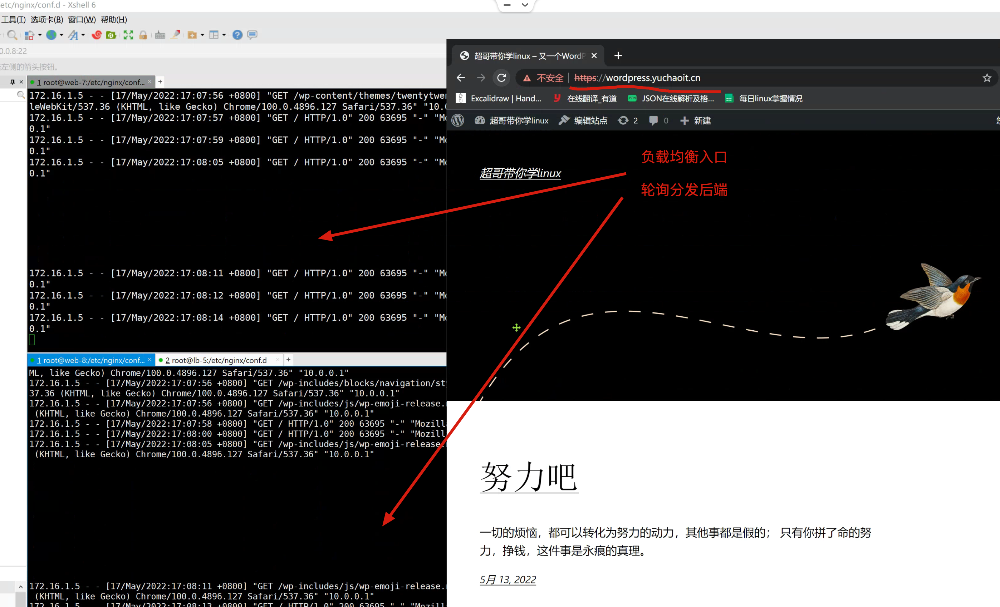
四、阿里云https证书免费申请
部署阿里云公网https测试...步骤和上述一样。